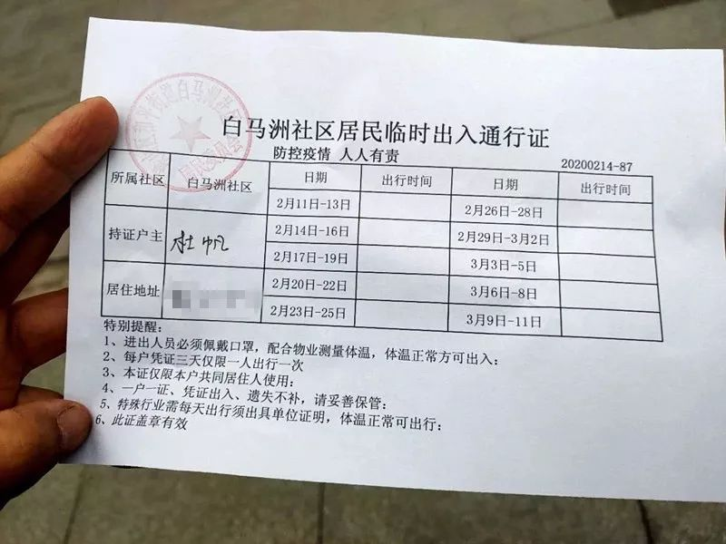
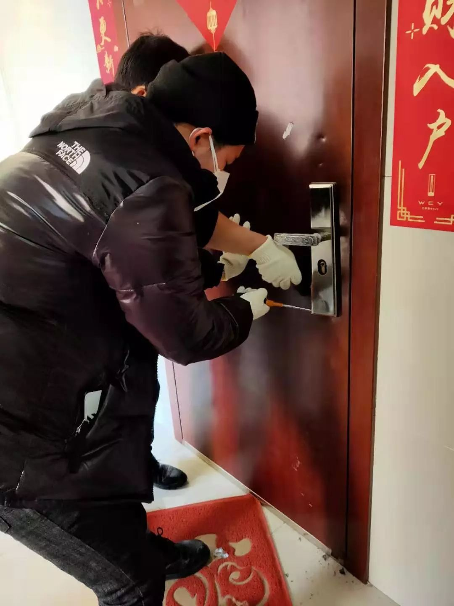

武汉留守宠物救助：“我收到了人生中最密集的好意”
原文链接 备份链接 城里的人出不去，城外的人进不来，留汉的宠物面临被饿死的境况。 文 | 许建宝、赵琼、周晓雨、王超 编辑 | 沈小山 武汉封城之后，除了留守的人们，还有数不清的无人照管的宠物。有些饲主早已料到不能及时回来便放生了，让宠 …
澎湃新闻记者 王昱
不久前，澎湃新闻私家地理栏目曾采访了武汉小动物协会会长杜帆，此前报道→《疫情之下，他们救助那些滞留在家的武汉小动物们》，了解到由于大量返乡过节人员短期内无法返回武汉，家中滞留猫狗存在着断水断粮的威胁。
为了解决这个问题，武汉小动物保护协会会长杜帆率领志愿者们从1月26日开始为武汉滞留小动物提供无偿援助。截止到目前，协会已经上门帮扶了1400多次，救助了5000多只动物。
然而，2月17日，武汉小动物保护协会在官方公众号发布消息称，随着武汉市小区管控越来越严格，志愿者们已经无法出行，也无法进入求助者所在的小区，上门帮扶工作将不得不暂停。
2月19日，澎湃新闻联系了武汉市小动物协会，会长杜帆告诉记者：“2月10日，武汉新冠肺炎防控指挥部发布了一个“第12号”文件后，我们得到了小区的通知：居民每家3天只可安排一人出小区采购生活物资，出行必须有居民临时出入证，车辆通行必须有单位证明，居民和车辆的出行都必须到社区进行备案。”
杜帆说，为了方便紧急情况能外出，协会志愿者们在第一时间就前往社区进行备案登记，同时还做了工作证明。

收到小区管控的通知后，杜帆立刻去办理了临时出入通行证 武汉小动物保护协会 图

志愿者第一时间办理了工作证明。 武汉小动物保护协会 图
两天后，疫情防控再次升级。据《楚天都市报》2月16日报道，武汉市洪山区开始实行全封闭管理，其中对小区内有新冠肺炎确诊患者或疑似患者所在楼栋一律实行封控管理，禁止出入楼栋，而小区其他居民除特殊需求，不得出入小区。
“原本还可以三天出去一次，但升级通知发出后，基本上就更难外出了。但求助信息还源源不断到来。现在我们每天还能收到二三十条求助信息。其中有不少是我们之前已经去过一次，但又到了需要补充水和食物的时间。”杜帆说。
为了解决这个问题，杜帆开始呼吁在外地的求助者们尽可能地寻找邻里街坊互帮互助。“我们有一个’武汉微邻里’的小程序和‘邻居帮帮忙：宠物互助平台’网站，我们现在能做的就是把求助者们引到这些平台上，让他们在里面寻找同小区的街坊领居来帮助。”

目前的办法是求助者可以登录宠物互助平台寻求邻里互助
不过，对于互助平台是否真的能起到有效的作用，杜帆表示这是非常时期的无奈之举，是目前唯一可行的办法。
“比较麻烦的情况是，一些住户把钥匙带走了，所以即便上门也进不去，需要找开锁师傅来开门。但现在在小区封锁的情况下，很难办到。”

许多求助案例都需要开门师傅来开锁，这也造成上门帮扶的难度加大。 武汉小动物保护协会 图
“我们目前救助的动物90%是猫，猫一星期不吃的话可能还能撑一会，但是其他的动物，如小香猪、兔子、仓鼠等等，情况就比较麻烦。”
杜帆认为如果情况持续下去，得不到改善，猫狗在家中死亡并且尸体腐烂可能会造成一些新的污染，这样对于住户家庭或者小区来说也不太安全。
据了解， 自“封城”以来，武汉小动物协会总共收到4200多个求助，登记在册的申请有1400多个，68名志愿者和工作人员通过17天的努力，完成无偿上门服务1400多次。同时通过QQ群，微信群协助完成2800多户，总共为将近5000只动物（猫狗，小香猪，兔子，蛇，鸟，鱼，仓鼠，龙猫等）补充食物和水。
杜帆表示，目前协会仍在与有关部门沟通，但目前还没有得到回复。
戳这里进入
“全国新型冠状病毒感染病例实时地图”↓↓↓

本期编辑 周玉华
推荐阅读


原文链接 备份链接 城里的人出不去，城外的人进不来，留汉的宠物面临被饿死的境况。 文 | 许建宝、赵琼、周晓雨、王超 编辑 | 沈小山 武汉封城之后，除了留守的人们，还有数不清的无人照管的宠物。有些饲主早已料到不能及时回来便放生了，让宠 …
原文链接 备份链接 作者简介 余静，成骨不全患者，现居住于武汉,心理咨询师，湖北省婚姻家庭研究会生命关怀委员会副主任 2月11日凌晨，武汉市新冠肺炎疫情防控指挥部发出第12号通告：即日起对市内小区实行封闭管理，对新冠肺炎确诊患者和疑似患者 …
原文链接 备份链接 文｜陈恕行 📍 发自美国湾区 1 南海岸的二月已经有了初夏的感觉，从暖风中穿过，阳光里能清晰地看到一粒粒金黄的花粉从树上纷纷落下。 每天下午两点，我录入完微博上最新的求助帖，走出图书馆回家。等着国内的志愿者伙伴们醒来前 …
原文链接 备份链接 能被救助的宠物是幸运的，有刚出生的小猫崽死在了猫砂盆中，有宠物猫从不慎打开的阳台“跳”了下去……两周的时间里，武汉市小动物保护协会收到了1500条求助信息，它们是另一群等待救援的生命。 全文4816字，阅读约需9.5分 …
原文链接 备份链接 按照西安市要求，明天正式复工，公司陆续发了文件，统计能如期到岗的员工，集中办理小区出入的说明文件（西安部分小区已经封门，进出需要提供盖章材料，更严格者贴通知“上班外出后也不能再进小区，自己和单位协商找地方住”）。 我情 …